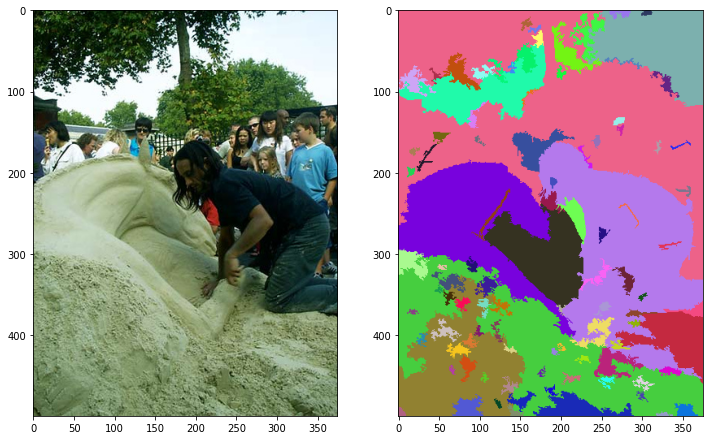
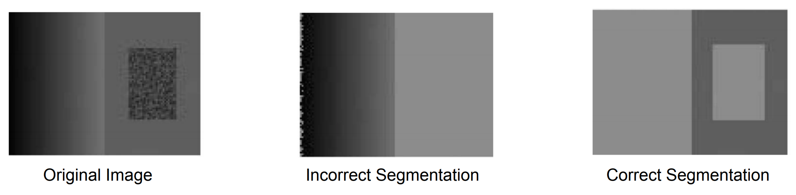
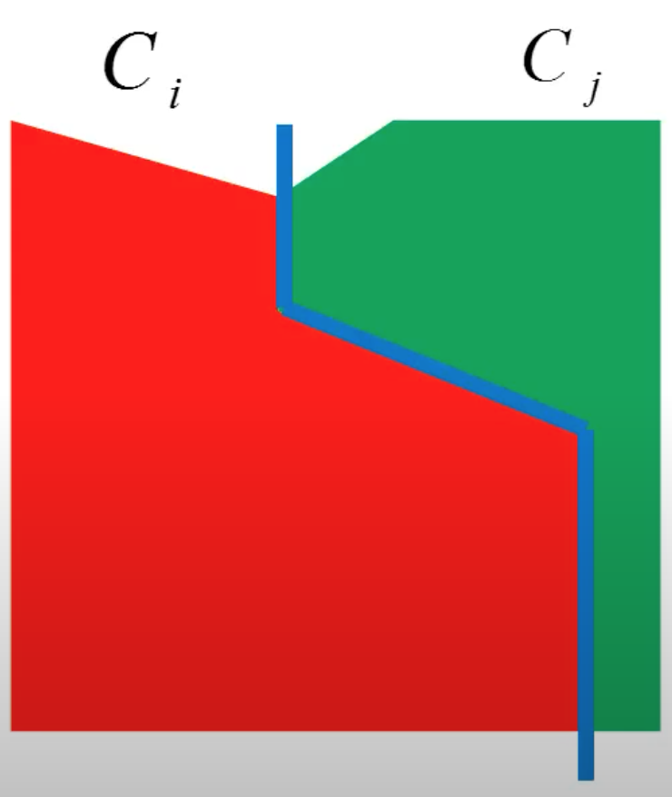

Efficient Graph-Based Image Segmentation
In this article, we would be discussing the paper Efficient Graph-Based Image Segmentation by Pedro F. Felzenszwalb from Artificial Intelligence Lab, Massachusetts Institute of Technology and Daniel P. Huttenlocher from Computer Science Department, Cornell University.
What is Segmentation?
Before delving any further, let us try to understand a bit more about the task at hand. What exactly do we mean by image segmentation?
Image Segmentation can be defined as the task of partitioning a given image into a set of disjoint regions usually with a goal of simplifying the representation of the image into something that is more meaningful and easier to analyze.

It has been observed from past segmentation approaches that
- It’s not adequate to assume that regions have nearly constant or slowly varying intensities.
- The determination of boundary between the regions cannot only use local decision criteria.

The Idea
Observing the performance of the past methods of image segmentation, the objective of this paper has been to develop an alogorithm for image segmentation that
- captures perceptually important regions that reflect global aspect.
- runs efficiently at near linear time complexity, \[O(n * log(n))\] in this case.
The idea proposed by Felzenszwalb and Huttenlocher is based on selecting edges from a graph, where each pixel corresponds to a node in the graph, and certain neighboring pixels are connected by undirected edges such that weights on each edge measure the dissimilarity between pixels. However, unlike the classical methods that predate this paper, this technique adaptively adjusts the segmentation criterion based on the degree of variability in neighboring regions of the image. This results in a method that, while making greedy decisions, can be shown to obey certain non-obvious global properties. The adaptive criteria is defined as follows:
There is a boundary between two adjacent regions Ci and Cj, i.e, Variation across Ci and Cj is greater than variation within Ci or Cj individually.

Problem Formulation
Let \[G=(V, E)\] be an undirected graph such that,
- \[v_{i} \epsilon V\]: set of vertices or pixels in the image to be segmented.
- \[e = (v_{i}, v_{j}) \epsilon E\]: set of edges corresponding to pairs of neighbouring vertices or pixels.
- Each edge \[e = (v_{i}, v_{j}) \epsilon E\] has a weight \[w(v_{i}, v_{j})\] denoting the dissimilarity between vi and vj.
\[S\] is a segmentation of a graph G such that \[{G}' = (V, {E}')\] where \[{E}' \subset E\]. \[S\] divides \[G\] into \[{G}'\] such that it contains distinct components (or regions) \[C\].
Graph Representation
Let us consider an image consisting of 12 pixels with the following intensities:
For representing the image as an undirected graph, we can use either the N4 system or the N8 system. According to N4 system, each node can be connected to 4 neighbouring nodes. Hence, by this system, the graph would be:
According to N8 system (8 connections with neighbouring nodes), the graph would be:
In this case, let us procced with the N4 Graph. Let us assign weights to the edges based upon the difference between the intensities.
Segmentation Formulation
Thus the segmentation problem can be formulated as partition of the vertex set V of the given undirected graph G into components C1, C2, ….. such that,
edges between two vertices in the same segment
Cishould have lower weightsedges between two vertices in different segments
CiandCjshould have lower weights
Going by this formulation, one possible one possible solution can the sets C1, C2 and C3 such that,
Partition Strategy
Internal Difference
The paper defines Internal Difference (Int) by of a componenet C ⊆ V as the largest weight in the Minimum Spanning Tree MST(C, E) of that component, i.e,
\[Int(C) = \max_{e \epsilon MST(C, E)} w(e)\]
\[Int(C) = 0\] if C has a single pixel.
One intuition underlying this measure is that a given component C only remains connected when edges of weight at least Int(C) are considered.By this definition,
Int(C1) = max(MST(C1, E)) = max(2, 2, 0, 1, 2, 1) = 2
Int(C2) = 5
Int(C3) = max(20, 10) = 20
Component Difference
The paper also Component Difference (Dif) as the difference between two components C1, C2 ⊆ V to be the minimum weight edge connecting the two components, i.e,
\[Dif(C_{1}, C_{2}) = \min_{v_{i} \epsilon C_{1}, v_{j} \epsilon C_{2}, (v_{i}, v_{j}) \epsilon E} w((v_{i}, v_{j}))\]
If there is no edge connectingC1 and C2, we let \[Dif(C_{1}, C_{2}) = \infty\]
This measure of difference could in principle be problematic, because it reflects only the smallest edge weight between two components. In practice we have found that the measure works quite well in spite of this apparent limitation. Moreover, changing the definition to use the median weight, or some other quantile, in order to make it more robust to outliers, makes the problem of finding a good segmentation NP-hard. Thus a small change to the segmentation criterion vastly changes the difficulty of the problem.
By this definition,
Dif(C1, C2) = 24
Dif(C1, C3) = 94
Dif(C2, C3) = 55
Boundary Predicate
The criterion for evaluating the evidence of a boundary between a pair of adjacent components is that,
There exists a boundary between two components if the Componenet Difference between the components is greater than the Internal Differences of either of the components
\[D(C_{1}, C_{2}) = \begin{Bmatrix} true & Dif(C_{i}, C_{j}) > min(Int(C_{i}), Int(C_{j}))\\ false & otherwise \end{Bmatrix}\]
However, this predicate is not a good example of local property because it makes the algorithm predict a lot of small components with small size, in the extreme case if Internal Difference is 0, then the component becomes a single pixel.
In order the counter this effect, the paper introduces a Threshold Function τ that controls the degree to which the difference between two components must be greater than their internal differences in order for there to be evidence of a boundary between them. It is given by \[\tau(c) = \frac{k}{|C|}\], where |C| denotes the size of C, and k is some constant parameter. This means, for small components we require stronger evidence for a boundary. In practice k sets a scale of observation, in that a larger k causes a preference for larger components. Note, however, that k is not a minimum component size. Smaller components are allowed when there is a sufficiently large difference between neighboring components.
The original predicate is thus rewritten as \[D(C_{1}, C_{2}) = \begin{Bmatrix} true & Dif(C_{i}, C_{j}) > min(Int(C_{i}) + \tau(C_{i}), Int(C_{j}) + \tau(C_{i}))\\ false & otherwise \end{Bmatrix}\].
Segmentation Algorithm
Input:
- A graph
G = (V, E)withnvertices andmedges. - A constant parameter
k.
Output:
- A partition of
Vinto segmentsS=(C1, C1, …)
Initialization:
- Consider each vertex a single element componenet.
- Initialize each component
CiwithInt(Ci) = 0. - Sort all edges
e ∈ Einto(e1, e2, …, em)according to their weights in a non-decreasing order.
Iteration Step q=(1, m):
Take step
eq = (vi, vj), wherevi = Ciandvj = Cj.If
Cj != CjIf boundary predicate
D(Cj, Cj) = false, merge all the componenetsCiandCj.If
CiandCjare merged,Int(Ci ∪ Cj) = w(eq).
q = q + 1
The Merge Condition in the iteration step is defined as
\[D(C_{i}, C_{j}) = false\]
This happens if \[Dif(C_{i}, C_{j}) \leq min(Int(C_{i}) + \tau(C_{i}), Int(C_{j}) + \tau(C_{i}))\].
This means that \[Dif(C_{i}, C_{j}) \leq Int(C_{i}) + \frac{k}{\tau(C_{i})}\] or \[Dif(C_{i}, C_{j}) \leq Int(C_{j}) + \frac{k}{\tau(C_{j})}\].
We can also write the condition as \[w(e_{q}) \leq Int(C_{i}) + \frac{k}{\tau(C_{i})}\] or \[w(e_{q}) \leq Int(C_{j}) + \frac{k}{\tau(C_{j})}\].
Implementation
I created a minimal python implementation of Felzenszwalb Segmentation. It can be installed using pip install felzenszwalb-segmentation.
import numpy as np
from glob import glob
from PIL import Image
from matplotlib import pyplot as plt
from felzenszwalb_segmentation import segment
image_files = glob('./VOCdevkit/VOC2012/JPEGImages/*.jpg')
image = np.array(Image.open(image_files[10]))
segmented_image = segment(image, 0.2, 400, 50)
fig = plt.figure(figsize=(12, 12))
a = fig.add_subplot(1, 2, 1)
plt.imshow(image)
a = fig.add_subplot(1, 2, 2)
plt.imshow(segmented_image.astype(np.uint8))
plt.show()Results